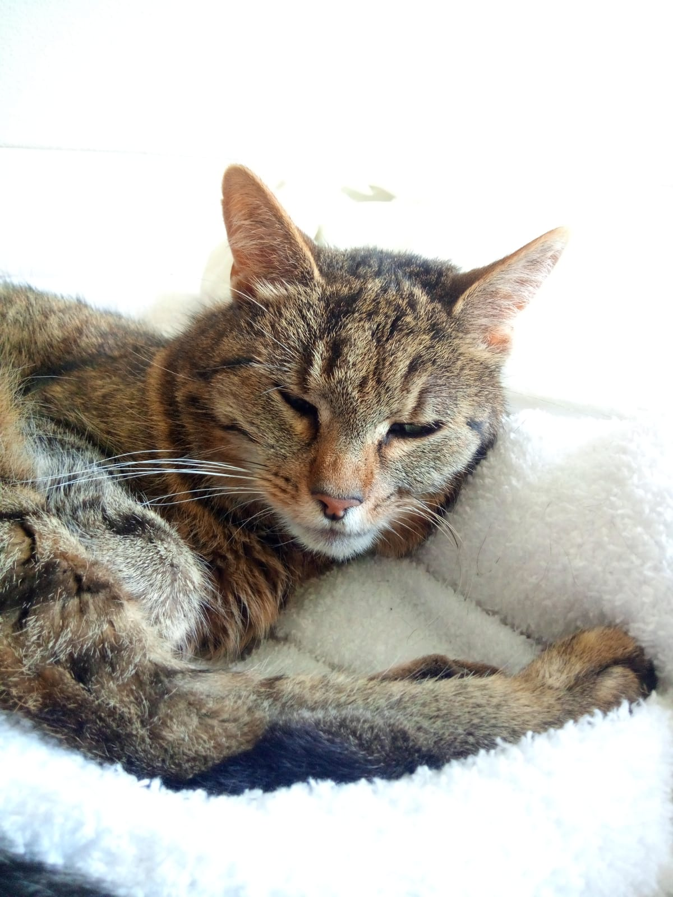
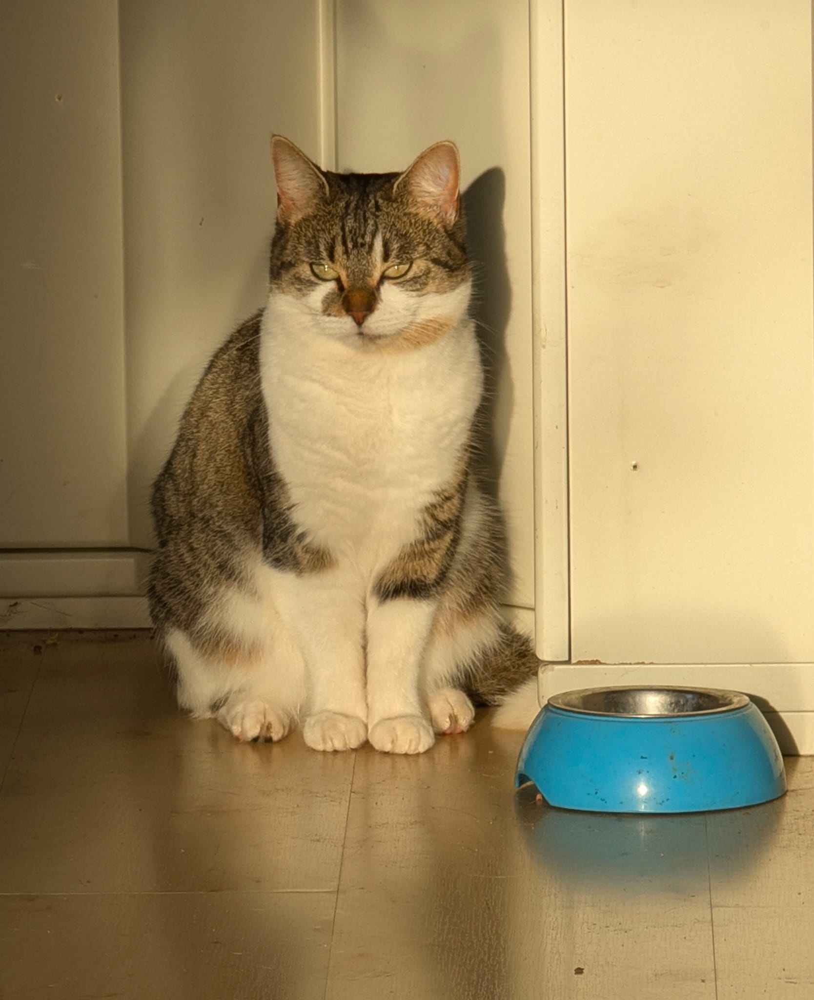

my pets
we have two cats and i love them dearly
Cats
Roxy
this is my cat roxy. she is a resque we got her
she was dumped in the forest with her brother
and sister shes 11 years old now and super sweet
she is a little bit shy and scared of new people
but when she trusts you she is playfull and never
bites her favorite spot to sleep is on a sheepskin
next to the heater and i dont blame her seems really
nice and cozy whenever i feel down she cheers me up
thats sounds cliche but idc cats are just nice and
relaxed

Mollie
we got mollie not so long ago after miauwtje
our old cat died we got her from a shelter
she is very cautious and and shy and runs away alot
we hoped shed become friends with roxy or atleast
that they would tolerate eachother but that couldnt
be further from the truth they hate eachother
she loves going outside and exploring begging for
treats and miauwing
